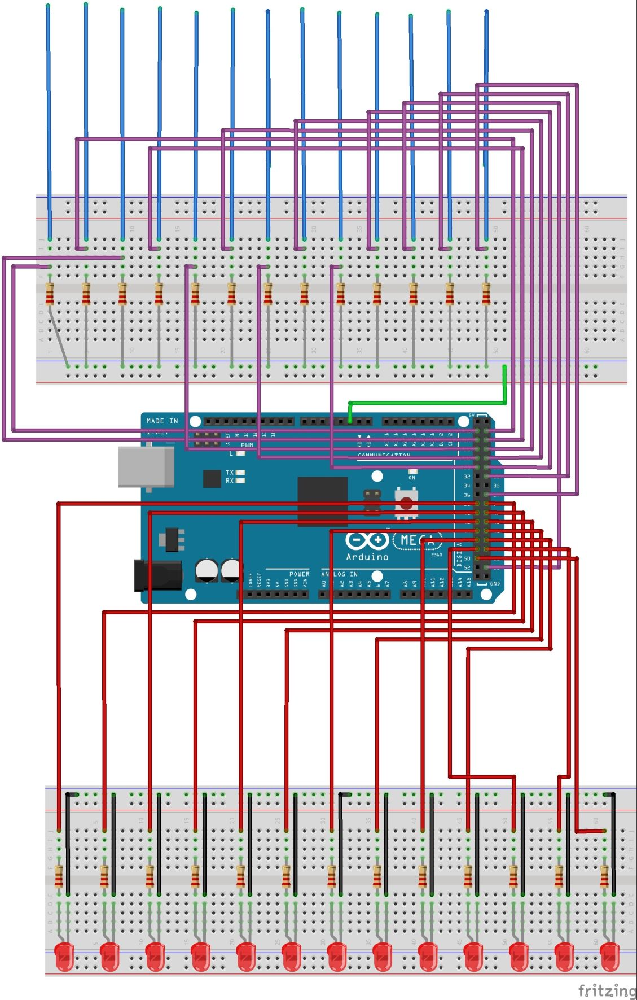

Electroluminescence

I designed an instrument made from hand crocheted mushrooms, serving as keys in a synthesizer embedded in a piece of driftwood. The piece paints an intersection of nature, art, and music. I wanted this piece first and foremost to be beautiful and feel magical. I hoped to create an organic synthesis of hand crafted and nature made objects, and the effect seemed to be a deformation from the natural--the wood, the mushroom concept--to the synthetic--the yarn, and the colorful wires appearing to almost a root system as they flowed into the breadboard and laptop.
The mushrooms serve as sensors and respond when touched. They are embedded with LEDs giving an ethereal glowing effect when touched, and more importantly, they trigger sounds. 3 of the mushrooms trigger loops, and the LEDs stay on while the loop runs. The looped sounds are a drumbeat (conga-breakbeat in style), an ethereal arpeggio chord progression (based in D minor), each at 80 BPM, and a sample of a thunderstorm (which seemed natural to the mushroom theme). Then 8 of the mushrooms trigger piano notes forming a D minor scale. If held, the loop re starts over and over again creating a glitching sustained piano note. The last mushroom triggers a chimes effect, adding to the magical fairy-like feel of the piece. With all these samples a reasonable electronic improvisation was made possible, allowing for an electronic music performance which used both natural and synthetic effects. It also makes for a fun interactive piece where the audience can come up and play with the notes, getting an immediate interactive response both visually and sonically. Here is a video of me performing on it.
Technical Aspects
Each of the 13 mushrooms were hand crocheted. They were then stuffed with a conductive wool of polyester and steel. Plugged into the wool was a wire, which came out of the stem of the mushroom. This turned each mushroom into a capacitive sensor, although to get enough sensitivity I needed 10M resistors so that the sensor could be triggered through the yarn (which is relatively resistive). Further, since each yarn had slightly different resistance, each sensor needed a different threshold to be triggered (and needed to be recalibrated every time the instrument was moved). In this way, the Arduino could read when each mushroom was touched.
Embedded in the stem of each mushroom was an LED, either blue, orange, red, white, green or purple. For 3 of these LEDs (corresponding to the mushrooms triggering loops), there was a variable keeping track of whether the loop was playing or not, and the LED would be on precisely while the loop was running. For the other 9, the LEDs were on precisely when the capacitive sensor was being triggered. Each LED was run through a 100 Ohm resistor.
A piece of driftwood was drilled with 13 holes, and the wires coming out of the stem of each mushroom was run through the driftwood, holding the mushrooms in place and allowing the wiring to pass underneath the wood to the breadboard.
The 3 loops and the chime samples were taken from SampleSwap.org, a free and open source sample database, (80_minimal-conga-breakbeat.aiff, 80_space-music-arpeggios, rain_1, bell-tree-tinkles-1). The piano notes were taken from the University of Iowa Department of Music, which has recordings of each note of a Steinwey Grand Piano here: http://theremin.music.uiowa.edu/MISpiano.html. Each of these were loaded into Processing using the minim package.
Arduino would print symbols to the Serial port based on which mushroom sensor had crossed the threshold, and Processing would observe and trigger the corresponding sound files. For the loops, a variable in arduino kept track of whether the loop was running or not, and it would either print Ti or Si (i=1,2,3) to either trigger or stop the loop. The rest just triggered the soundbite. The soundfiles were played on my computer, which was plugged into a speaker system.
Here is a sketch of the circuit. I have the code lying around somewhere so just ask if you'd like to check it out.
